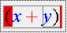

You can check your equation by clicking the check mark button on the far right of the standard toolbar. This will highlight parts of your equation, giving you visual feedback about problems and the way in which the equation is being interpreted, as illustrated here:

In this case, there is an extra level of nesting containing the 'y)' leading the Input Control to signal that the parentheses are mis-matched.
You can toggle back and forth between syntax highlighting and regular display by clicking the check mark button again. Also, starting to edit will revert the equation to normal mode.
If there are obvious problems with your equation, the Input Control will highlight the template where the error was detected in blinking red.
The color of symbols in a highlighted expression denotes the role the content generation algorithm thinks it plays in your equation. The color codes are as follows:
| Color | Syntactic Role |
| red | operator |
| blue | operand |
| green | function |
See the WebEQ Developers Suite documentation for more details.